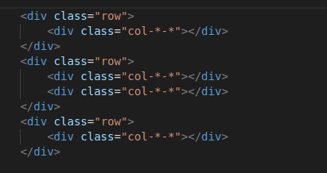

12 adet yatay olacak şekilde div sıralama sistemi vardır her div için kaç adet alan kaplayacağı kaçıncı dilimden başlayacağını belirtebiliriz
grid sistemi kullanılırken dikkat edilmesi gereken en önemli konulardan birisi fixed(container) mı yoksa fluid(container-fuid) tasarımmı yapacağımızdır.
ızgara oluştururken table mantığı ile divler oluşturulur
row değerleri görüldüğü gibi kullanılırken *-* olan col kısımlarında farklı parametreler kullanılmaktadır.
row ile satırın col-*-* ile (* tanımının yerine başka tanımlar gelecek) satırların tanımlandığını biliyoruz şimdi * değerlerinin ne olacağı ve ne gibi etkiler var bunları inceliyor olacağız.
bootstrapta 4 farklı ekran modeli yer alır bunlar telefon xs(xsmall), tablet sm(small), dizüstü md(medium), masaüstü lg(large), daha büyük ekranlar için xl(x large) tanımlamaları vardır eğer ekran çözünürlüğü belirli aralıkların altında yada üstündeyse kolonlarda kaydırmalar yapılır
yapacağımız tasarımlara göre bu tanımlardan birini seçmemiz gerekmetedir.